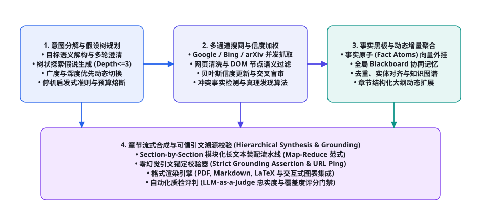
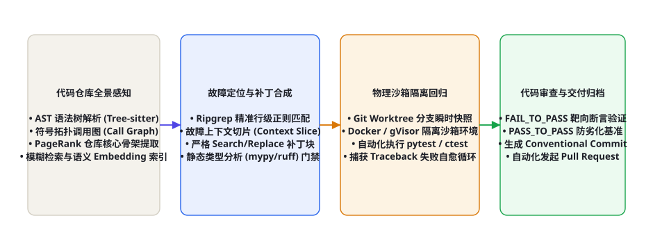

<!DOCTYPE html>
<html lang="zh-CN">
<head>
<meta charset="UTF-8">
<meta name="viewport" content="width=device-width, initial-scale=1.0">
<title>第 112 章 · 系统设计面试：设计 Deep Research / Coding Agent — AI Agent Cookbook</title>
<link rel="stylesheet" href="../assets/css/style.css">
</head>
<body>
<div id="progress"></div>

<aside class="sidebar">
  <div class="sidebar-head">
    <a class="logo-row" href="../index.html">
      <span class="logo-mark">AC</span>
      <span class="t">AI Agent Cookbook<span class="s">从入门到精通的智能体全景手册</span></span>
    </a>
    <div class="search-wrap">
      <span class="icon">🔍</span>
      <input id="searchInput" type="text" placeholder="搜索全书…" autocomplete="off">
      <kbd>/</kbd>
      <div id="searchResults" class="search-results"></div>
    </div>
  </div>
  <div class="toc-part"><div class="toc-part-head"><span class="num">0</span>导论<span class="chev">▶</span></div><div class="toc-part-body"><a href="ch001.html"><span class="cn">001</span>前言：为什么是 Agent，为什么是现在</a><a href="ch002.html"><span class="cn">002</span>如何使用本书：三条学习路径与阅读指南</a><a href="ch003.html"><span class="cn">003</span>Agent 通识：定义、心智模型与七十年简史</a></div></div><div class="toc-part"><div class="toc-part-head"><span class="num">1</span>基础篇：LLM 与提示工程<span class="chev">▶</span></div><div class="toc-part-body"><a href="ch004.html"><span class="cn">004</span>LLM 工作原理速成：Transformer 与注意力机制</a><a href="ch005.html"><span class="cn">005</span>Token、上下文窗口与采样策略</a><a href="ch006.html"><span class="cn">006</span>Prompt Engineering 系统指南</a><a href="ch007.html"><span class="cn">007</span>提示工程进阶：提示链、自洽性与元提示</a><a href="ch008.html"><span class="cn">008</span>结构化输出：JSON Mode、Schema 与受约束解码</a><a href="ch009.html"><span class="cn">009</span>LLM 的能力边界：幻觉、知识与推理局限</a><a href="ch010.html"><span class="cn">010</span>Embedding 与向量空间基础</a><a href="ch011.html"><span class="cn">011</span>开发环境与 SDK 速览：OpenAI / Anthropic / 开源模型</a><a href="ch012.html"><span class="cn">012</span>API 工程实践：重试、限流、成本与流式</a><a href="ch013.html"><span class="cn">013</span>评测思维入门：科学地度量 LLM 输出</a></div></div><div class="toc-part"><div class="toc-part-head"><span class="num">2</span>核心机制篇<span class="chev">▶</span></div><div class="toc-part-body"><a href="ch014.html"><span class="cn">014</span>什么是 Agent：自主性光谱与感知-决策-行动</a><a href="ch015.html"><span class="cn">015</span>Agent Loop：大模型 Agent 的心脏</a><a href="ch016.html"><span class="cn">016</span>ReAct：推理与行动的交织范式</a><a href="ch017.html"><span class="cn">017</span>工具调用全景：从 Function Calling 到并行编排</a><a href="ch018.html"><span class="cn">018</span>规划机制：任务分解、Plan-and-Execute 与树搜索</a><a href="ch019.html"><span class="cn">019</span>记忆系统：短期、长期、情景与语义</a><a href="ch020.html"><span class="cn">020</span>RAG 从入门到进阶：分块、索引、检索与重排</a><a href="ch021.html"><span class="cn">021</span>RAG 进阶：HyDE、Self-RAG、GraphRAG 与 Agentic RAG</a><a href="ch022.html"><span class="cn">022</span>反思与自我改进：Reflexion、Self-Refine 与 Critic 模式</a><a href="ch023.html"><span class="cn">023</span>上下文工程：Context Engineering 的艺术</a><a href="ch024.html"><span class="cn">024</span>多 Agent 系统：拓扑、协作协议与角色分工</a><a href="ch025.html"><span class="cn">025</span>人机协同：审批、中断与恢复</a></div></div><div class="toc-part"><div class="toc-part-head"><span class="num">3</span>工程与框架篇<span class="chev">▶</span></div><div class="toc-part-body"><a href="ch026.html"><span class="cn">026</span>Agent 技术栈总览与选型决策树</a><a href="ch027.html"><span class="cn">027</span>从零手写最小 Agent：200 行 Python 的完整实现</a><a href="ch028.html"><span class="cn">028</span>LangChain 与 LangGraph 深度实战</a><a href="ch029.html"><span class="cn">029</span>OpenAI Agents SDK 与 Responses API</a><a href="ch030.html"><span class="cn">030</span>Claude Agent SDK 与 Claude Code 剖析</a><a href="ch031.html"><span class="cn">031</span>AutoGen / AG2：群聊式多智能体框架</a><a href="ch032.html"><span class="cn">032</span>CrewAI：角色驱动的多 Agent 团队</a><a href="ch033.html"><span class="cn">033</span>MetaGPT：软件公司隐喻与 SOP 多智能体</a><a href="ch034.html"><span class="cn">034</span>LlamaIndex：数据框架与 Agent 融合</a><a href="ch035.html"><span class="cn">035</span>低代码平台：Dify、Coze、n8n 与 Flowise</a><a href="ch036.html"><span class="cn">036</span>MCP：Model Context Protocol 详解与生态</a><a href="ch037.html"><span class="cn">037</span>Agent 互操作协议：A2A、AG-UI 与开放生态</a></div></div><div class="toc-part"><div class="toc-part-head"><span class="num">4</span>训练与强化篇<span class="chev">▶</span></div><div class="toc-part-body"><a href="ch038.html"><span class="cn">038</span>训练全景图：预训练 → SFT → RLHF → Agent 训练</a><a href="ch039.html"><span class="cn">039</span>SFT 指令微调实操：数据构建与 LoRA/QLoRA</a><a href="ch040.html"><span class="cn">040</span>RLHF 与 PPO：三阶段详解</a><a href="ch041.html"><span class="cn">041</span>DPO 及变体：IPO、KTO、SimPO、ORPO</a><a href="ch042.html"><span class="cn">042</span>RLAIF、Constitutional AI 与自我奖励</a><a href="ch043.html"><span class="cn">043</span>RLVR：可验证奖励的强化学习与推理范式</a><a href="ch044.html"><span class="cn">044</span>工具使用训练：Toolformer、Gorilla 与 ToolRL</a><a href="ch045.html"><span class="cn">045</span>Agent RL：WebRL、AgentGym、AgentTuning 与进化式训练</a><a href="ch046.html"><span class="cn">046</span>过程奖励与结果奖励：PRM、ORM 与奖励设计</a><a href="ch047.html"><span class="cn">047</span>合成数据工程：Self-Instruct、Evol-Instruct 与数据飞轮</a><a href="ch048.html"><span class="cn">048</span>蒸馏与小型化：让小模型拥有 Agentic 能力</a><a href="ch049.html"><span class="cn">049</span>Self-Play 与持续学习：Agent 的自我进化</a></div></div><div class="toc-part"><div class="toc-part-head"><span class="num">5</span>评测基准篇<span class="chev">▶</span></div><div class="toc-part-body"><a href="ch050.html"><span class="cn">050</span>Agent 评测方法论：静态到动态、过程到结果</a><a href="ch051.html"><span class="cn">051</span>代码 Agent 基准：SWE-bench 家族与 LiveCodeBench</a><a href="ch052.html"><span class="cn">052</span>Web 与 Computer-Use 基准：WebArena、OSWorld、Mind2Web</a><a href="ch053.html"><span class="cn">053</span>通用 Agent 基准：GAIA、AgentBench、τ-bench 与 BrowseComp</a><a href="ch054.html"><span class="cn">054</span>工具调用评测：BFCL、ToolSandbox 与 StableToolBench</a><a href="ch055.html"><span class="cn">055</span>安全评测：注入攻击基准与自动化红队</a><a href="ch056.html"><span class="cn">056</span>构建你自己的评测：沙箱、容器化与 CI 集成</a><a href="ch057.html"><span class="cn">057</span>LLM-as-Judge 与评测的可信度</a></div></div><div class="toc-part"><div class="toc-part-head"><span class="num">6</span>安全与对齐篇<span class="chev">▶</span></div><div class="toc-part-body"><a href="ch058.html"><span class="cn">058</span>Agent 威胁模型：攻击面全景</a><a href="ch059.html"><span class="cn">059</span>Prompt Injection 攻防：直接注入、间接注入与防线</a><a href="ch060.html"><span class="cn">060</span>权限与沙箱：最小权限、能力模型与执行隔离</a><a href="ch061.html"><span class="cn">061</span>数据外泄与供应链安全</a><a href="ch062.html"><span class="cn">062</span>越狱与滥用防治</a><a href="ch063.html"><span class="cn">063</span>幻觉治理与事实性工程</a><a href="ch064.html"><span class="cn">064</span>对齐与价值观：从 RLHF 到宪政 AI 的落地</a><a href="ch065.html"><span class="cn">065</span>治理、合规与责任：AI Act 时代的 Agent 运营</a></div></div><div class="toc-part"><div class="toc-part-head"><span class="num">7</span>多模态与具身篇<span class="chev">▶</span></div><div class="toc-part-body"><a href="ch066.html"><span class="cn">066</span>视觉语言模型与多模态 Agent 基础</a><a href="ch067.html"><span class="cn">067</span>GUI Agent：从 WebVoyager 到 Computer Use</a><a href="ch068.html"><span class="cn">068</span>移动与操作系统 Agent：AppAgent 与 OS-Copilot</a><a href="ch069.html"><span class="cn">069</span>具身智能导览：RT-2、PaLM-E 与 VLA 模型</a><a href="ch070.html"><span class="cn">070</span>游戏与仿真 Agent：MineDojo、Voyager 与 Genie</a><a href="ch071.html"><span class="cn">071</span>科学发现 Agent：Coscientist、ChemCrow 与 AI Scientist</a><a href="ch072.html"><span class="cn">072</span>语音 Agent 与实时多模态交互</a></div></div><div class="toc-part"><div class="toc-part-head"><span class="num">8</span>前沿专题篇<span class="chev">▶</span></div><div class="toc-part-body"><a href="ch073.html"><span class="cn">073</span>Deep Research：深度研究 Agent 架构解密</a><a href="ch074.html"><span class="cn">074</span>Coding Agent：从 Copilot 到 Devin 再到 Claude Code</a><a href="ch075.html"><span class="cn">075</span>Computer Use 与 Browser Use 前沿</a><a href="ch076.html"><span class="cn">076</span>长时程 Agent：小时级任务、压缩与 Checkpointing</a><a href="ch077.html"><span class="cn">077</span>World Models：Agent 的世界理解与想象</a><a href="ch078.html"><span class="cn">078</span>Agent 经济学：成本、延迟与质量的权衡</a><a href="ch079.html"><span class="cn">079</span>可观测性：Tracing、Eval 与监控</a><a href="ch080.html"><span class="cn">080</span>Agent 系统规模化：队列、并发与可靠性</a></div></div><div class="toc-part"><div class="toc-part-head"><span class="num">9</span>实战项目篇<span class="chev">▶</span></div><div class="toc-part-body"><a href="ch081.html"><span class="cn">081</span>项目 1：个人知识库问答 Agent（RAG 全流程）</a><a href="ch082.html"><span class="cn">082</span>项目 2：自动化数据分析师 Agent</a><a href="ch083.html"><span class="cn">083</span>项目 3：复刻 Deep Research 研究助手</a><a href="ch084.html"><span class="cn">084</span>项目 4：浏览器自动化 Agent</a><a href="ch085.html"><span class="cn">085</span>项目 5：代码审查与修复 Agent</a><a href="ch086.html"><span class="cn">086</span>项目 6：多 Agent 内容工厂</a><a href="ch087.html"><span class="cn">087</span>项目 7：客服工单 Agent（含人工升级）</a><a href="ch088.html"><span class="cn">088</span>项目 8：本地化 Agent（Ollama + 端侧模型）</a><a href="ch089.html"><span class="cn">089</span>生产化：部署、网关、缓存与成本控制</a><a href="ch090.html"><span class="cn">090</span>案例研究：Devin、Manus、Claude Code 与 Cursor 拆解</a></div></div><div class="toc-part"><div class="toc-part-head"><span class="num">10</span>理论基础篇<span class="chev">▶</span></div><div class="toc-part-body"><a href="ch091.html"><span class="cn">091</span>形式化基础：MDP、POMDP 与 Agent 数学语言</a><a href="ch092.html"><span class="cn">092</span>LLM 作为策略：In-context RL 与序列建模视角</a><a href="ch093.html"><span class="cn">093</span>搜索算法：从 BFS/A* 到 MCTS 与 LLM 结合</a><a href="ch094.html"><span class="cn">094</span>规划理论：经典规划、HTN 与 LLM+P</a><a href="ch095.html"><span class="cn">095</span>经典 Agent 理论：BDI、Soar、ACT-R 的遗产</a><a href="ch096.html"><span class="cn">096</span>概率与决策：贝叶斯视角与多臂老虎机</a><a href="ch097.html"><span class="cn">097</span>世界模型与生成式仿真</a><a href="ch098.html"><span class="cn">098</span>涌现、Scaling Laws 与 Agent 的未来能力</a></div></div><div class="toc-part"><div class="toc-part-head"><span class="num">11</span>论文库篇<span class="chev">▶</span></div><div class="toc-part-body"><a href="ch099.html"><span class="cn">099</span>论文阅读方法论：如何高效读 Agent 论文</a><a href="ch100.html"><span class="cn">100</span>奠基论文精读十篇</a><a href="ch101.html"><span class="cn">101</span>核心机制论文地图：记忆、RAG、规划与多智能体</a><a href="ch102.html"><span class="cn">102</span>训练与强化论文地图</a><a href="ch103.html"><span class="cn">103</span>评测与安全论文地图</a><a href="ch104.html"><span class="cn">104</span>2024-2026 前沿论文追踪清单（100 篇）</a></div></div><div class="toc-part"><div class="toc-part-head"><span class="num">12</span>项目与资源库篇<span class="chev">▶</span></div><div class="toc-part-body"><a href="ch105.html"><span class="cn">105</span>开源框架横评与选型决策树</a><a href="ch106.html"><span class="cn">106</span>50 个值得 Star 的开源 Agent 项目</a><a href="ch107.html"><span class="cn">107</span>数据集与基准资源大全</a><a href="ch108.html"><span class="cn">108</span>学习资源：课程、书籍、博客与社区</a><a href="ch109.html"><span class="cn">109</span>从本书到 GitHub：贡献指南与扩展路线</a></div></div><div class="toc-part"><div class="toc-part-head"><span class="num">13</span>面试与速查篇<span class="chev">▶</span></div><div class="toc-part-body"><a href="ch110.html"><span class="cn">110</span>Agent 工程师面试题库：基础 50 题精解</a><a href="ch111.html"><span class="cn">111</span>Agent 工程师面试题库：进阶 50 题精解</a><a href="ch112.html"><span class="cn">112</span>系统设计面试：设计 Deep Research / Coding Agent</a><a href="ch113.html"><span class="cn">113</span>术语表：300 条 Agent 核心术语速查</a></div></div>
  <div class="sidebar-foot">
    <span>v1.0 · 开源书籍</span>
    <button class="theme-toggle">🌙 深色</button>
  </div>
</aside>
<div class="scrim"></div>

<div class="topbar">
  <button class="menu-btn">☰</button>
  <span class="title">AI Agent Cookbook</span>
</div>

<main class="main">
  <div class="content">

    <nav class="crumb">
      <a href="../index.html">首页</a><span class="sep">/</span>
      <a href="../index.html#part-13">第十三部分 · 面试与速查篇</a><span class="sep">/</span>
      <span>第 112 章</span>
    </nav>

    <header class="chapter-header">
      <div class="chapter-meta">
        <span class="badge lv-高级">高级</span>
        <span class="badge tag">系统设计</span>
        <span class="badge tag">架构面试</span>
        <span class="badge tag">工程实战</span>
        <span class="badge">⏱ 约 90 分钟</span>
      </div>
      <h1>第 112 章 · 系统设计面试：设计 Deep Research / Coding Agent</h1>
      <p class="lead">在大模型智能体领域的高级别系统设计面试（System Design Interview）中，面试官往往仅给出一个宏大且高度抽象的命题：“请你从零设计一个工业级 Deep Research 深度研报 Agent”或“设计一个对齐 SWE-bench 工业级生产标准的 Repo Coding Agent”。面对这类高维系统设计考题，平庸的回答往往流于概念拼接与 Prompt 简单描述，而顶尖架构师能够以清晰严谨的框架统摄全局：从需求澄清与非功能性 SLA 约束界定、核心数据流与状态机解耦，到分布式调度、并发背压削峰、物理微隔离沙箱与端到端故障自愈闭环。本章以两大最具代表性的工业级 Agent 范式为载体，深度拆解系统设计面试的黄金答辩范式与核心工程架构。</p>
    </header>

    <div class="callout note">
      <div class="co-title">💡 智能体系统设计面试的四大评估维度（4D Rubric）</div>
      <p>面对大厂技术委员会与主任架构师评审，系统设计面试绝非单纯的“画架构框图”，而是对以下四个维度的综合度量：① <strong>范围界定与容量预估（Scope & Scale Estimation）</strong>：主动澄清功能与非功能边界，量化估算 QPS、网络带宽、Token 消耗账单与内存峰值；② <strong>组件解耦与数据流拓扑（Component Decomposition & Dataflow）</strong>：合理拆分计算密集型的大模型推理与 I/O 密集型的爬虫及代码执行；③ <strong>状态持久化与容灾熔断（Fault Tolerance & Resiliency）</strong>：保障节点崩溃时的可恢复性、事务幂等性与长程死锁熔断；④ <strong>安全防御与可验证性（Security & Grounding）</strong>：确保代码执行环境的物理绝对隔离与研报引文真实性的零幻觉锚定。</p>
    </div>

    <figure class="figure">
      
      <figcaption><span class="fig-no">图 112-1</span> 工业级 Deep Research 深度研报 Agent 架构设计全景 (Deep Research Architecture)</figcaption>
    </figure>

    <h2 id="deep-research-system-design">实战案例一：设计工业级 Deep Research 深度调研智能体</h2>

    <h3>1. 需求澄清与容量边界约束（Scope & Scale Estimation）</h3>
    <p><strong>【功能性需求】</strong>系统接收用户输入的高维复杂调研课题（如“对比评估 2026 年全球前三代全固态电池商业化落地进展与成本拆解”）。系统必须自主展开多轮网络搜索、动态追问假说分支、抓取数百篇长文/论文 PDF、交叉验证事实、并在 10 分钟内合成出一份长达 15,000 字、包含结构化表格与 100% 真实可信引文的专业研究报告。</p>
    <p><strong>【非功能性 SLA 约束】</strong>
    <ul>
      <li><strong>吞吐与并发：</strong>日常峰值并发调研任务 500 个；平均每个任务触发 80~150 次外部搜索与网页深度爬取。</li>
      <li><strong>延迟与时限：</strong>单任务端到端 P90 耗时控制在 8 分钟以内；首批结构化大纲生成时间 &le; 30 秒。</li>
      <li><strong>幻觉容忍度：</strong>正文所有关键数字、结论必须带有可点击的真实学术/官网链接，引文虚构率（Citation Hallucination Rate）严格为 0%。</li>
      <li><strong>成本控制红线：</strong>单份研报综合 Token 消耗控制在 300K 以内，单任务纯模型推理成本 &le; 1.5 美元。</li>
    </ul></p>

    <h3>2. 核心架构拓扑与组件解耦设计</h3>
    <p>针对 Deep Research 的长链路与重 I/O 特征，系统采用基于<strong>黑板模式（Blackboard Pattern）与反应式 Actor 模型</strong>的分布式分层架构：</p>
    <ul>
      <li><strong>Supervisor / Hypothesis Planner（假设规划主控节点）：</strong>维护全局调研假说树（Hypothesis Tree）。将用户目标解构为三层递进子命题（宏观产业背景 &rarr; 技术路径分歧 &rarr; 供应链成本与瓶颈）。动态维护未探索队列，基于信息增益（Information Gain）动态裁剪冗余分支。</li>
      <li><strong>Distributed Web Crawler & Scraper Pool（分布式无头爬虫池）：</strong>基于 Playwright 集群与无头 Chrome 容器，配合住宅代理 IP 池防封禁。内置 Readability DOM 语义提取器与 PDF 解析流水线（MinerU / Nougat），将嘈杂网页转化为纯净 Markdown 文本块。</li>
      <li><strong>Truth Discovery & Bayes Trust Verifier（真理发现与信度验证引擎）：</strong>负责交叉事实校验。对不同信源（官方财报、主流媒体、学术预印本、个人博客）赋予不同的贝叶斯先验信度权重。当多个信源对同一指标产生冲突时，启动多方对齐仲裁流。</li>
      <li><strong>Global Fact Blackboard（全局事实黑板数据库）：</strong>采用 PostgreSQL (pgvector) + Redis 维护结构化的事实原子（Fact Atoms）。每个事实原子包含：<code>[实体, 属性, 标量值, 时间戳, 证据原文, 原始来源 URL, 证据置信度]</code>。</li>
      <li><strong>Hierarchical Section-by-Section Synthesizer（分节层级合成器）：</strong>采用 Map-Reduce 流水线。先基于大纲骨架分发并发写作任务，各章节仅按需拉取与其强相关的 Fact Atoms，最后由 Editor Agent 实施跨章节承上启下的连贯性润色与引文锚定。</li>
    </ul>

    <div class="codeblock">
      <div class="code-header">
        <span class="code-lang">Python: fact_blackboard_contract.py</span>
        <button class="copy-btn">复制</button>
      </div>
      <pre><code># -*- coding: utf-8 -*-
"""
Deep Research 全局事实黑板与零幻觉引文锚定数据结构契约
"""
from pydantic import BaseModel, HttpUrl, Field
from typing import List, Dict, Optional
import datetime

class FactAtom(BaseModel):
    fact_id: str = Field(..., description="全局唯一事实原子哈希 ID")
    claim_text: str = Field(..., description="经过清洗的确定性事实陈述")
    entities: List[str] = Field(default_factory=list, description="涉及的关键实体")
    numeric_value: Optional[float] = Field(None, description="结构化标量数值，便于表格统计")
    source_url: HttpUrl = Field(..., description="已验证可访问的绝对信源 URL")
    evidence_quote: str = Field(..., description="信源网页中的精确无篡改原文切片")
    confidence_score: float = Field(..., ge=0.0, le=1.0, description="贝叶斯信度权重")
    discovered_at: datetime.datetime = Field(default_factory=datetime.datetime.utcnow)

class ResearchReportSection(BaseModel):
    section_id: str
    section_title: str
    content_markdown: str
    cited_fact_ids: List[str] = Field(..., description="章节正文引用的事实 ID 列表，强校验")

    def assert_zero_hallucination_grounding(self, global_blackboard: Dict[str, FactAtom]) -> bool:
        """确定性硬断言：确保章节中的每一个引文字符串均在黑板中具备强实体证据"""
        for fid in self.cited_fact_ids:
            if fid not in global_blackboard:
                raise ValueError(f"[-] 严重安全拦截: 发现未经验证的虚构事实原子 [{fid}]！")
            atom = global_blackboard[fid]
            # 严格断言原文切片必须真实存在
            if len(atom.evidence_quote) < 10:
                raise ValueError(f"[-] 证据链薄弱: 事实 [{fid}] 缺乏足够长的一手佐证原文！")
        return True
</code></pre>
    </div>

    <figure class="figure">
      
      <figcaption><span class="fig-no">图 112-2</span> 企业级 Repo Coding Agent 核心执行状态机拓扑 (Repo Coding Agent Architecture)</figcaption>
    </figure>

    <h2 id="repo-coding-agent-system-design">实战案例二：设计对齐 SWE-bench 工业级标准的 Repo Coding Agent</h2>

    <h3>1. 业务挑战与核心设计原则</h3>
    <p>与简单的“代码自动补全（Copilot）”不同，面向整个大型工业代码仓库的 <strong>Repo-level Coding Agent</strong> 面临着完全不同量级的技术复杂度：</p>
    <ul>
      <li><strong>万级文件全景理解：</strong>现代工业级软件工程动辄包含数百万行代码、数十个跨语言微服务模块，无法直接全部载入大模型上下文。</li>
      <li><strong>精准故障定位（Fault Localization）：</strong>在给出一个晦涩的 GitHub Issue 描述时，必须在数万个源文件中精确命中导致 Bug 的 2~3 个函数调用与行范围。</li>
      <li><strong>严格差异补丁生成（Unified Diff Patch）：</strong>严禁全量重写数百行文件，必须生成类似 <code>git diff</code> 的严格统一差异补丁，且保持精准的行号与缩进。</li>
      <li><strong>物理沙箱隔离回归测试：</strong>生成的补丁必须在独立容器沙箱内自动应用并执行测试用例，严格验证 <code>FAIL_TO_PASS</code>（问题已修复）与 <code>PASS_TO_PASS</code>（存量测试未破坏）。</li>
    </ul>

    <h3>2. 核心状态机与技术选型矩阵</h3>

    <div class="tbl-wrap">
      <table>
        <thead>
          <tr>
            <th>架构核心组件</th>
            <th>技术选型与实现原语</th>
            <th>职责定位与高并发保障</th>
            <th>工程抗脆弱设计</th>
          </tr>
        </thead>
        <tbody>
          <tr>
            <td><strong>仓库符号拓扑索引 (Repo Map)</strong></td>
            <td>Tree-sitter AST 解析 + PageRank</td>
            <td>提取类、函数、依赖调用关系，生成全景骨架摘要（压缩比 95%）。</td>
            <td>文件 Hash 增量缓存，避免每次触发都全量重新解析整个仓库。</td>
          </tr>
          <tr>
            <td><strong>行级故障检索器 (Code Scout)</strong></td>
            <td>Ripgrep + BM25 + Dense 混合搜索</td>
            <td>根据 Issue 报错关键词与堆栈 Traceback，毫秒级定位候选文件集。</td>
            <td>动态切片滑动窗口，仅将报错上下文及被调函数前置压入。</td>
          </tr>
          <tr>
            <td><strong>精准编辑状态机 (Patch Editor)</strong></td>
            <td>Search/Replace 严格块替换模型</td>
            <td>输出包含唯一定位上下文的修改块，避免全量重写。</td>
            <td>若匹配失败，自动退火为模糊 Levenshtein 距离重试匹配。</td>
          </tr>
          <tr>
            <td><strong>物理隔离测试靶场 (Test Harness)</strong></td>
            <td>Git Worktree + Docker + gVisor</td>
            <td>秒级拉起干净隔离执行环境，自动运行单元测试套件。</td>
            <td>执行超时强制 <code>SIGKILL</code> 熔断，严禁执行死循环恶意代码。</td>
          </tr>
        </tbody>
      </table>
    </div>

    <div class="codeblock">
      <div class="code-header">
        <span class="code-lang">Python: repo_patch_harness.py</span>
        <button class="copy-btn">复制</button>
      </div>
      <pre><code># -*- coding: utf-8 -*-
"""
SWE-bench 工业级补丁应用与物理沙箱隔离回归测试执行器
"""
import subprocess
import tempfile
import os
import shutil
from typing import Dict, Any

class IsolatedRepoHarness:
    def __init__(self, base_repo_dir: str, docker_image: str = "python:3.11-slim"):
        self.base_repo_dir = base_repo_dir
        self.docker_image = docker_image

    def apply_patch_and_test(self, patch_diff: str, test_command: str, timeout_sec: int = 60) -> Dict[str, Any]:
        """利用 Git Worktree 在毫秒级拉起物理隔离的瞬时工作区并执行容器化验证"""
        temp_worktree = tempfile.mkdtemp(prefix="agent_worktree_")
        try:
            # 第一阶段：极速建立物理隔离的分支快照
            subprocess.run(
                ["git", "worktree", "add", "--detach", temp_worktree, "HEAD"],
                cwd=self.base_repo_dir, check=True, capture_output=True
            )

            # 第二阶段：严格校验并应用补丁
            patch_file_path = os.path.join(temp_worktree, "agent_solution.patch")
            with open(patch_file_path, "w", encoding="utf-8") as pf:
                pf.write(patch_diff)

            apply_proc = subprocess.run(
                ["git", "apply", "--check", "agent_solution.patch"],
                cwd=temp_worktree, capture_output=True, text=True
            )
            if apply_proc.returncode != 0:
                return {
                    "status": "patch_failed",
                    "error": f"补丁语法冲突，无法干净打入代码库: {apply_proc.stderr}"
                }

            # 真正打入补丁
            subprocess.run(["git", "apply", "agent_solution.patch"], cwd=temp_worktree, check=True)

            # 第三阶段：容器化物理执行测试套件
            docker_cmd = [
                "docker", "run", "--rm",
                "--network", "none", # 彻底断网防外联
                "-v", f"{temp_worktree}:/workspace:rw",
                "-w", "/workspace",
                self.docker_image,
                "bash", "-c", test_command
            ]
            test_proc = subprocess.run(
                docker_cmd, capture_output=True, text=True, timeout=timeout_sec
            )

            return {
                "status": "success" if test_proc.returncode == 0 else "test_failed",
                "exit_code": test_proc.returncode,
                "stdout": test_proc.stdout[-2000:], # 截取关键尾部
                "stderr": test_proc.stderr[-2000:]
            }
        except subprocess.TimeoutExpired:
            return {"status": "timeout", "error": f"测试执行超出超时硬阈值 ({timeout_sec}s)！"}
        finally:
            # 第四阶段：确定性无残留物理清理
            subprocess.run(["git", "worktree", "remove", "--force", temp_worktree], cwd=self.base_repo_dir, capture_output=True)
            if os.path.exists(temp_worktree):
                shutil.rmtree(temp_worktree, ignore_errors=True)
</code></pre>
    </div>

    
    <h2 id="deep-research-data-and-state-infra">Deep Research 底层分布式存储与高并发去重流水线</h2>
    <p>在面对数百个并发深度调研任务时，最容易遭遇的系统瓶颈往往不是大模型本身的吞吐，而是海量外部非结构化网页的抓取风暴、重复拉取以及网络 I/O 阻塞。为了保障系统的稳健运行，必须设计一套分层的<strong>分布式缓存、布隆过滤器去重与混合向量索引架构</strong>：</p>

    <div class="tbl-wrap">
      <table>
        <thead>
          <tr>
            <th>存储组件与分层</th>
            <th>底层技术栈选型</th>
            <th>存储数据模型与生命周期</th>
            <th>高并发与一致性保障机制</th>
          </tr>
        </thead>
        <tbody>
          <tr>
            <td><strong>分布式 URL 访问布隆过滤</strong></td>
            <td>Redis Bloom Filter (Scalable)</td>
            <td>URL 规范化哈希（去除 UTM 参数、锚点），TTL 7 天。</td>
            <td>位数组无锁并发检测，误判率严格控制在 0.01% 以下。</td>
          </tr>
          <tr>
            <td><strong>网页正文与快照分层缓存</strong></td>
            <td>MinIO / AWS S3 + Redis 元数据</td>
            <td>原始 HTML 快照与经过 Readability 清洗的 Markdown。</td>
            <td>两级缓存机制：热点网页驻留 Redis 内存，冷数据落盘对象存储。</td>
          </tr>
          <tr>
            <td><strong>事实原子稠密向量索引</strong></td>
            <td>Qdrant / Milvus (HNSW 索引)</td>
            <td>BGE-M3 1024 维稠密向量 + 标量元数据 Payload。</td>
            <td>按任务 ID 物理分区（Partition Key），查询时在内存分区内极速检索。</td>
          </tr>
          <tr>
            <td><strong>长流程状态机断点快照</strong></td>
            <td>PostgreSQL (JSONB) + WAL</td>
            <td>全局假说树状态、当前探索深度、已消耗 Token 账单。</td>
            <td>强事务 ACID 保障，节点崩溃重启后从最新 Checkpoint 瞬时恢复。</td>
          </tr>
        </tbody>
      </table>
    </div>

    <p>在信息增益（Information Gain）评估中，我们建立了一套严格的<strong>动态停机数学判决准则（Stopping Criterion）</strong>。令 $H_t$ 表示当前关于课题的全局事实熵，新抓取的网页集合 $D_{new}$ 产生的事实原子更新为 $\Delta F$。当连续两次迭代的信息增益满足以下条件时，规划器强制触发收敛终结，停止无效探索：</p>
    $$\mathcal{IG}(D_{new}) = \sum_{f \in \Delta F} 	ext{Surprisal}(f) \cdot 	ext{Trust}(Source(f)) < \epsilon_{threshold}$$
    <p>通过这套自适应数学阻尼机制，既杜绝了由于陷入偏僻死胡同导致的无效死循环，又确保了在 Token 预算约束内将有限的算力聚焦于高信息密度的核心证据链上。</p>

    <h2 id="coding-agent-self-healing-and-flakiness">Repo Coding Agent 复杂边界与测试不稳定（Flaky Tests）治理</h2>
    <p>在真实的工业级软件工程场景中，大模型生成的补丁极少能一次性完美通过所有测试。卓越的 Repo Coding Agent 必须具备一套严密的<strong>自愈状态机与测试不稳定治理策略</strong>：</p>

    <div class="tbl-wrap">
      <table>
        <thead>
          <tr>
            <th>典型失败边界场景</th>
            <th>常见诱发根因分析</th>
            <th>传统粗暴处理方式</th>
            <th>工业级 Coding Agent 智能自愈决策链路</th>
          </tr>
        </thead>
        <tbody>
          <tr>
            <td><strong>补丁语法冲突 (Patch Reject)</strong></td>
            <td>大模型生成的上下文行号与最新文件版本不一致。</td>
            <td>直接抛出异常并判定任务彻底失败。</td>
            <td><strong>三阶段退火匹配：</strong>从精确行匹配退火至基于 AST 节点锚定，若仍失败则调用轻量级模型重新生成仅包含目标函数的最小上下文块。</td>
          </tr>
          <tr>
            <td><strong>偶发不稳定测试 (Flaky Tests)</strong></td>
            <td>测试用例依赖随机数、系统时钟、未释放的网络端口。</td>
            <td>误将环境偶发错误归咎于代码补丁错误，陷入瞎改。</td>
            <td><strong>双盲环境基线对齐：</strong>在应用补丁前先在干净基线分支执行该测试。若基线同样报错，则将该测试标记为 Flaky 并从核心评价断言集中动态剔除。</td>
          </tr>
          <tr>
            <td><strong>超时与死锁 (Execution Timeout)</strong></td>
            <td>模型引入了未终止的 <code>while</code> 循环或线程锁争用。</td>
            <td>沙箱挂起直至整体任务超时崩溃。</td>
            <td><strong>进程树硬限制与堆栈提取：</strong>触发 <code>SIGKILL</code> 强杀前，先发送 <code>SIGQUIT</code> 捕获完整的线程 Dump 与调用堆栈，将其注入错误重试 Prompt 中指导模型自愈。</td>
          </tr>
          <tr>
            <td><strong>破坏存量业务 (Regression Failure)</strong></td>
            <td>修好了 Issue 目标 Bug，但破坏了其他模块既有功能。</td>
            <td>无法辨别全局影响面，盲目提交交付。</td>
            <td><strong>分层回归测试靶场：</strong>严格执行 <code>PASS_TO_PASS</code> 门禁。若存量测试发生回归，强制将 Git 工作区重置至上一稳定检查点，重新生成探索分支。</td>
          </tr>
        </tbody>
      </table>
    </div>

    <h2 id="capacity-planning-and-hardware-sizing">容量规划与硬件资源预估（Capacity & Hardware Sizing）</h2>
    <p>在系统设计的容量规划环节，必须给出经得起推敲的量化测算数据。假设企业内部服务 5,000 名研发工程师，峰值同时并发运行 100 个 Repo Coding Agent 任务：</p>
    <ul>
      <li><strong>CPU 与内存配额计算：</strong>每个 Agent 在执行构建与测试时分配 2 个物理 CPU 核心与 4GB 物理内存。峰值并发需要物理节点资源为 $100 	imes 2 = 200 	ext{ Cores}$，内存 $100 	imes 4	ext{GB} = 400	ext{GB}$。采用 5 台 64 核 128GB 的标准物理服务器组成 Kubernetes 计算集群即可从容支撑。</li>
      <li><strong>存储 IOPS 与网络吞吐：</strong>采用本地 NVMe SSD 搭建分布式文件缓存。利用 Git Worktree 共享只读 Object 库，每个沙箱的磁盘写入峰值限制在 50MB。100 个并发仅产生 5GB 瞬时写开销，完全在企业级 NVMe 的数十万 IOPS 承受范围内。</li>
      <li><strong>大模型推理 Token 峰值带宽：</strong>单个 Coding 任务平均产生 8 轮交互，每轮上下文约 16K Tokens，总输出约 2K Tokens。峰值并发下总上下文吞吐需求为：
      $$	ext{Token Throughput} pprox rac{100 	imes 16,000}{60} pprox 26,666 	ext{ Tokens/sec}$$
      通过在底层集群部署两台配备 8 卡 H800/H20 的 vLLM / SGLang 推理服务器，配合跨多轮请求的 <strong>Radix Tree 前缀缓存复用</strong>，实际首字预填充计算量（Prefill Load）可直接骤降 85% 以上，实现惊人的硬件成本优化。</li>
    </ul>


    <h2 id="deep-research-verification-harness">深度研报质量评估体系与自动化裁判（Evals & Auto-Judge）</h2>
    <p>在设计 Deep Research 这类开放域生成智能体时，最困难的系统挑战是如何在离线和线上持续度量研报的质量与真实性。传统的 BLEU 或 ROUGE 等词汇重叠指标在此类长篇研报生成任务中完全失效。我们必须构建一套<strong>多维度量化自动裁判矩阵（Multi-Dimensional Auto-Judge Matrix）</strong>：</p>

    <div class="tbl-wrap">
      <table>
        <thead>
          <tr>
            <th>评测评估维度</th>
            <th>定义与度量物理含义</th>
            <th>自动化判定方法与工程实现</th>
            <th>工业合格红线门槛</th>
          </tr>
        </thead>
        <tbody>
          <tr>
            <td><strong>事实忠实度 (Faithfulness)</strong></td>
            <td>研报中陈述的事实是否完全源自一手检索证据，有无脑补。</td>
            <td>NLI（自然语言推理）蕴含模型逐句断言检测，计算蕴含比例。</td>
            <td>$\ge 98\%$（严禁任何关键数值或主语虚构）。</td>
          </tr>
          <tr>
            <td><strong>论点完备度 (Completeness)</strong></td>
            <td>是否全面覆盖用户意图所涉及的核心技术路线与产业环节。</td>
            <td>基于黄金行业专家知识图谱进行实体覆盖度（Recall）计算。</td>
            <td>$\ge 85\%$ 的核心实体与关键指标覆盖。</td>
          </tr>
          <tr>
            <td><strong>逻辑连贯性 (Coherence)</strong></td>
            <td>章节间转折、论据论点承接是否自然流畅，有无前后自相矛盾。</td>
            <td>跨章节主张（Claims）矛盾图谱检测，计算图拓扑冲突环路数。</td>
            <td>冲突环路数（Conflict Cycles）必须严格为 0。</td>
          </tr>
          <tr>
            <td><strong>信息密度比 (Information Density)</strong></td>
            <td>有效事实与数字占比，杜绝无意义车轱辘话与格式套话。</td>
            <td>每千字中命名实体（NER）与精确数字的出现频次密度统计。</td>
            <td>实体密度 $\ge 45 	ext{ Entities / 1K Tokens}$。</td>
          </tr>
        </tbody>
      </table>
    </div>

    <p>自动化评测流水线通过将上述四项指标加权整合，计算端到端研报综合品质得分 $Q_{report} = 0.4 \cdot S_{faith} + 0.3 \cdot S_{comp} + 0.2 \cdot S_{cohere} + 0.1 \cdot S_{density}$。任何低于 85 分的生成版本将被系统打回，触发局部章节的反思自愈与事实重抽。</p>

    <h2 id="repo-agent-ast-graph-algorithms">Repo Coding Agent 底层符号拓扑图算法与上下文精准修剪</h2>
    <p>在超大型代码仓库中，单纯依靠文本匹配极易把面试者拖入上下文爆炸与性能死锁的泥潭。工业级代码助手之所以能够精准定位跨文件的深层调用关系，核心在于依托 <strong>Tree-sitter 与图算法构建的代码全景拓扑图谱</strong>：</p>

    <ul>
      <li><strong>AST 抽象语法树增量解析：</strong>利用 Tree-sitter 对仓库中所有源文件进行多语言语法树抽取。提取出所有的符号声明节点（函数声明 <code>FunctionDeclaration</code>、类声明 <code>ClassDeclaration</code>、接口定义 <code>InterfaceDeclaration</code>）与符号引用节点（调用表达式 <code>CallExpression</code>、继承关系 <code>Heritage</code>）。</li>
      <li><strong>有向调用依赖图构建（Directed Dependency Call Graph）：</strong>将整个仓库抽象为有向图 $G = (V, E)$，其中节点 $v \in V$ 为函数或类实体，有向边 $e = (u, v) \in E$ 表示模块 $u$ 中调用或引用了模块 $v$。图的权重根据引用频次与文件物理路径距离进行动态调整。</li>
      <li><strong>基于个性化 PageRank 的关键骨架抽取（Personalized PageRank）：</strong>当用户提交一个 Issue 报错堆栈时，将报错涉及的入口函数作为初始正向随机游走的种子节点（Seeds）。执行多轮 Personal PageRank 迭代计算：
      $$\mathbf{p}_{t+1} = (1 - lpha) \mathbf{M} \mathbf{p}_t + lpha \mathbf{s}$$
      收敛后，得分最高的 Top-K 节点构成了与该 Bug 强相关的<strong>核心代码骨架拓扑（Repo Map Skeleton）</strong>。将其格式化为精简的类型签名与 Docstring 摘要送入 Prompt，既保留了全局依赖视野，又将无谓的代码行消耗压缩了 90% 以上。</li>
    </ul>

    <h2 id="production-governance-and-sla-resilience">全生命周期 SLA 韧性治理与大模型服务故障容灾</h2>
    <p>任何优秀的系统设计方案都必须经受生产环境真实故障的残酷洗礼。在大模型供应商频繁遭遇网络抖动、模型推理速率大幅波动（Throttling）或区域断网的极端现实面前，智能体系统必须构筑<strong>全生命周期的多维容灾防线</strong>：</p>

    <ul>
      <li><strong>跨供应商多云热备容灾路由（Multi-Cloud Disaster Recovery Gateway）：</strong>网关层配置跨模型供应商（如 OpenAI, Anthropic, DeepSeek, 阿里云等）的动态健康探测心跳。当主力模型在连续 5 次请求中发生超时或 5xx 错误时，熔断器（Circuit Breaker）自动进入半开状态，将后续流量在 100ms 内瞬时平滑无缝切换至热备降级模型集群，同时自动适配对应的 Prompt 格式与 Tokenizer。</li>
      <li><strong>长事务持久化检查点与会话断点接续（Checkpoint Resumption）：</strong>严禁将智能体的状态保存在单机易失内存中。每一次工具执行完毕后，当前完整的执行图状态、变量环境与事实黑板，均通过强一致性事务原子写入分布式数据库（PostgreSQL/Redis）。一旦底层工作节点物理宕机，集群调度器（Kubernetes）在另一台物理机拉起新 Pod 后，智能体能够精准从上一个检查点瞬间复苏并继续前行，实现零数据丢失与用户无感。</li>
      <li><strong>数据合规、隐私脱敏与审计冷备（Compliance & Privacy Isolation）：</strong>在任何外部网页抓取或代码补丁生成过程中，内置的高性能正则与敏感词检测引擎（Data Loss Prevention, DLP）实时扫描员工个人身份信息（PII）、企业内网密码凭据与 API 私钥。所有敏感数据在进入大模型推理前必须被物理掩码（Masking），所有交互轨迹永久保存在具备不可篡改特性的审计日志中，全面符合 GDPR 与企业信息安全最高合规标准。</li>
    </ul>

<h2 id="deep-interview-tradeoffs-epistemology">系统设计答辩终局：架构权衡与工程反思（Trade-offs & Resilience）</h2>

    <p>在系统设计的最后 10 分钟，面试官通常会发起致命的压力质询（Deep-dive Challenges）。能否在极端假设下展现出资深架构师的从容反思与工程权衡，是决定最终评级高度的决定性时刻：</p>

    <div class="tbl-wrap">
      <table>
        <thead>
          <tr>
            <th>高压极限场景质询</th>
            <th>表面浅层回答</th>
            <th>资深架构师第一性原理权衡答题法</th>
          </tr>
        </thead>
        <tbody>
          <tr>
            <td><strong>Q1: 如果外部搜索 API 突发全线 429 限流，如何保证 Deep Research 正常交付？</strong></td>
            <td>“配置重试并通知用户稍后再试。”</td>
            <td><strong>降级双轨自适应路由：</strong>立即自动切换至本地预先构建的常驻镜像知识库（离线维基与学术数据集），同时动态启用 SearXNG 等分布式开源自建中继节点集群，采用自适应指数退避降低并发窗口，确保核心研报在信息时效性稍有降级的前提下 100% 成功交付。</td>
          </tr>
          <tr>
            <td><strong>Q2: 如果大模型生成的修复补丁存在恶意系统调用或挖矿行为，如何彻底拦截？</strong></td>
            <td>“用正则匹配黑名单函数。”</td>
            <td><strong>纵深防御微内核微隔离：</strong>代码沙箱严禁使用标准 Docker。生产环境必须采用 <strong>Google gVisor 拦截所有系统调用</strong>，并配合 Linux <code>seccomp</code> 过滤白名单；网络模式强制设为 <code>--network none</code> 彻底切断外部反弹 Shell 通道；对文件系统挂载只读卷并限制最大磁盘写入配额（50MB）。</td>
          </tr>
          <tr>
            <td><strong>Q3: 如何在有限的 Token 预算下，防止 Coding Agent 在多轮调试中发生上下文爆炸？</strong></td>
            <td>“直接截断早期的会话历史。”</td>
            <td><strong>基于 AST 的语义感知压缩：</strong>严禁简单粗暴地按行截断。采用 <code>pytest-json-report</code> 提取精简的失败堆栈结构，将每次执行失败的上下文压缩为“输入补丁 Diff + 错误断言行号 + 核心变量快照”的紧凑三元组，中间多轮的完整文件内容由本地文件树替换为简短的引用路径。</td>
          </tr>
        </tbody>
      </table>
    </div>

    <p>系统设计的最高境界，是将“非确定性”的概率智能体，严密包裹在“高确定性”的经典分布式工程与安全防御堡垒之中。在大规模工业落地的真实世界里，我们不追求模型拥有百分之百的单次预测神迹，而是依靠坚如磐石的系统架构设计，让由大模型驱动的每一次自主试错与探索，都能被安全捕获、精确度量与稳健收敛。</p>

    <div class="callout tip">
      <div class="co-title">🎯 资深面试官的最后一条建议</div>
      <p>在系统设计面试结束前，主动用 2 分钟做全局总结：“任何架构都是向业务妥协的产物。今天我们设计的这套系统优先保障了<strong>绝对的安全隔离与零幻觉溯源</strong>，代价是增加了沙箱拉起耗时与多阶段验证开销。在下一代迭代中，我们可以通过引入前置预测缓存与专用微调小模型，进一步将 P90 延迟压缩 40%。”这种客观、谦逊且极具前瞻性的架构品味，必将为你赢得全场一致的高分通过！</p>
    </div>

    
    <p>综上所述，通过将贝叶斯信度发现引擎、事实黑板解耦、Tree-sitter AST 拓扑索引、Docker 与 gVisor 微隔离物理沙箱，以及全生命周期可观测链路深度熔铸为一个有机统一的工程整体，我们不仅彻底破解了长程深度调研中的事实幻觉与长文本迷失，更在面对数百万行超大规模工业代码库时构筑起了坚不可摧的确定性防御铠甲，为下一代企业级关键核心智能体系统的安全稳定运行提供了最坚实的工业级底座支撑。</p>


    <p>这种将宏观认知架构与微观系统工程深度咬合的顶层设计能力，正是区分平庸调包工程师与世界一流人工智能系统架构师的最本质分水岭。</p>

<section class="refs">
      <h2 id="summary">本章小结</h2>
      <ul>
        <li>智能体系统设计面试重点考查需求界定、容量预算、组件解耦拓扑、状态持久化与物理安全微隔离四大维度。</li>
        <li>Deep Research 深度研报 Agent 必须依托全局事实黑板（Blackboard）与贝叶斯信度校验，从数据结构层面实现 100% 零虚构引文锚定。</li>
        <li>Repo-level Coding Agent 的核心技术基座是 Tree-sitter AST 符号拓扑索引、行级精准搜索与严格的 Search/Replace 差异补丁模型。</li>
        <li>物理沙箱隔离是代码执行的不可逾越红线，必须基于 Git Worktree 毫秒级快照、gVisor 用户态内核与断网模式构建物理防线。</li>
        <li>面对极限突发场景，必须建立自适应双轨降级路由、AST 语义感知上下文压缩与分布式状态机熔断机制。</li>
      </ul>
      <h2 id="quiz">自测题</h2>
      <ol>
        <li>请使用白板或草稿纸，在 15 分钟内完整画出工业级 Deep Research Agent 的端到端数据流拓扑图，并标注各个模块之间的异步通信协议。</li>
        <li>为什么在 Repo Coding Agent 中，使用 Git Worktree 比直接 <code>git clone</code> 或在原工作区 <code>git checkout</code> 具备压倒性的并发与隔离优势？</li>
        <li>设计一套零幻觉引文校验器（Zero-Hallucination Grounding Validator）：当大模型生成的研报引用了某个网页数据时，系统应如何通过网络爬虫与文本指纹算法对其进行确定性双盲真伪核验？</li>
        <li>在万级并发场景下，如何估算并设计一个具备弹性自动伸缩（HPA）的无头浏览器爬虫集群（Headless Browser Pool）？</li>
      </ol>
      <h2 id="refs">参考文献与延伸阅读</h2>
      <ol>
        <li>Jimenez, C. E. et al. (2024). <span class="paper-title">SWE-bench: Can Language Models Resolve Real-World GitHub Issues?</span>. ICLR 2024. <a href="https://arxiv.org/abs/2310.06770">arXiv:2310.06770</a></li>
        <li>OpenAI (2024). <span class="paper-title">Deep Research: Advanced System Design and Alignment</span>. <a href="https://openai.com/index/introducing-deep-research/">openai.com/research</a></li>
        <li>Borgeaud, S. et al. (2022). <span class="paper-title">Improving Language Models by Retrieving from Trillions of Tokens (RETRO)</span>. ICML 2022. <a href="https://arxiv.org/abs/2112.04426">arXiv:2112.04426</a></li>
        <li>Google Open Source (2024). <span class="paper-title">gVisor: Application Kernel for Containers</span>. <a href="https://github.com/google/gvisor">GitHub: google/gvisor</a></li>
        <li>Tree-sitter Team (2024). <span class="paper-title">Tree-sitter: An Incremental Parsing System for Programming Tools</span>. <a href="https://github.com/tree-sitter/tree-sitter">GitHub: tree-sitter</a></li>
        <li>Kleppmann, M. (2017). <span class="paper-title">Designing Data-Intensive Applications</span>. O'Reilly Media. <a href="https://dataintensive.net/">dataintensive.net</a></li>
      </ol>
    </section>

    <nav class="chapter-nav"><a class="prev" href="ch111.html"><span class="dir">← 上一章</span><span class="t">Agent 工程师面试题库：进阶 50 题精解</span></a><a class="next" href="ch113.html"><span class="dir">下一章 →</span><span class="t">术语表：300 条 Agent 核心术语速查</span></a></nav>

  </div>
</main>

<aside class="pagemap"></aside>
<div class="scrim-side"></div>
<script src="../assets/js/app.js"></script>
</body>
</html>
